Test Case Management
Generate Test Cases
-
In the left-side menu bar, click the + button on the right of the project name.
-
Click the Artifact Type field, you can see five kinds of artifacts: Process, User Interface, Service, Case Type and Build from Scratch. Choose User Interface or Service to generate a unit test case, choose Process to generate a BPD test case, choose Case Type to generate a case test case, and choose Build from Scratch to generate an empty test case folder.
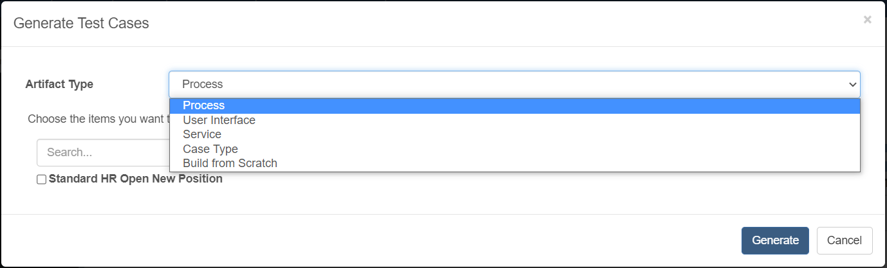
-
Choose process items.
-
Click the Create button to generate cases.
Create a Test Case
-
Click the Create Test Case button on the dropdown menu of the suite name.
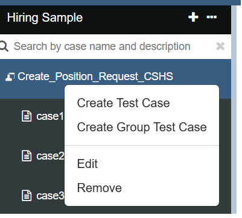
-
Fill in the case name and case description.
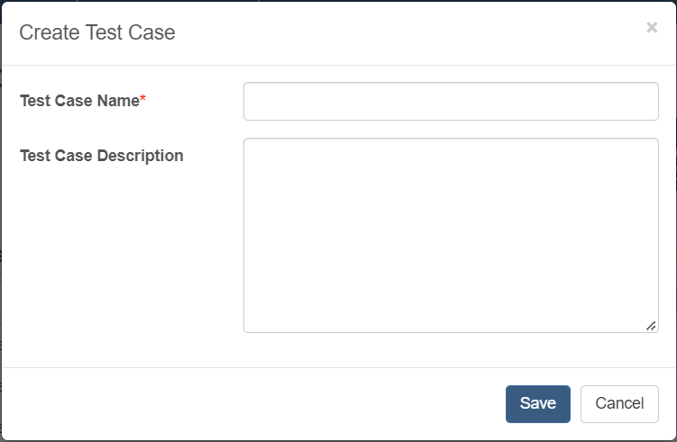
-
Click the Save button. You can see the new test case shown in the left-side menu bar. When your mouse hovers over the test case name, you can see the description of the test case.
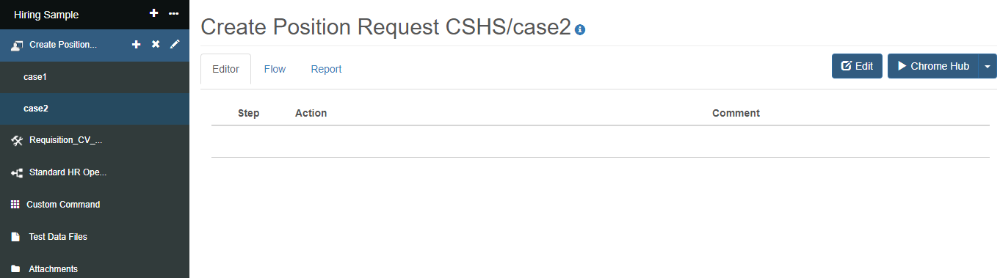
Edit Test Case
Edit Test Suite Info
-
Click the Edit button on the dropdown menu of the suite name.
-
Update the suite name.
-
Click the Update button.
Edit Test Case Info
-
Click the Edit button on the right of the case name.
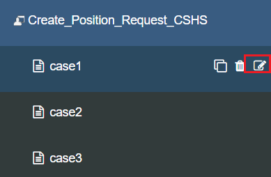
-
Edit the test case name and description.
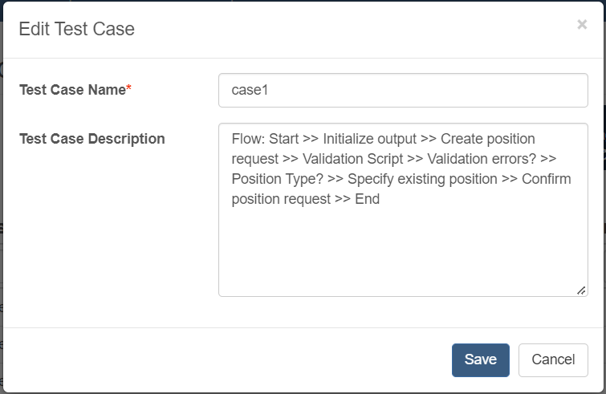
-
Click the Update button.
Add a Case Step
-
Select the test case step position where you want to insert. In the popup menu, choose the Add link to insert.
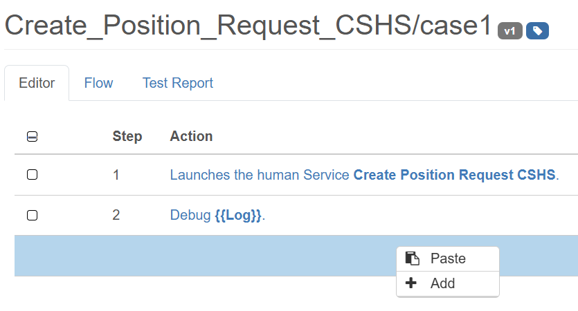
-
Choose the command you want to add and add a comment for the command if necessary. Different commands have different parameters. More details, see API reference. Fill out the form to add a case step.
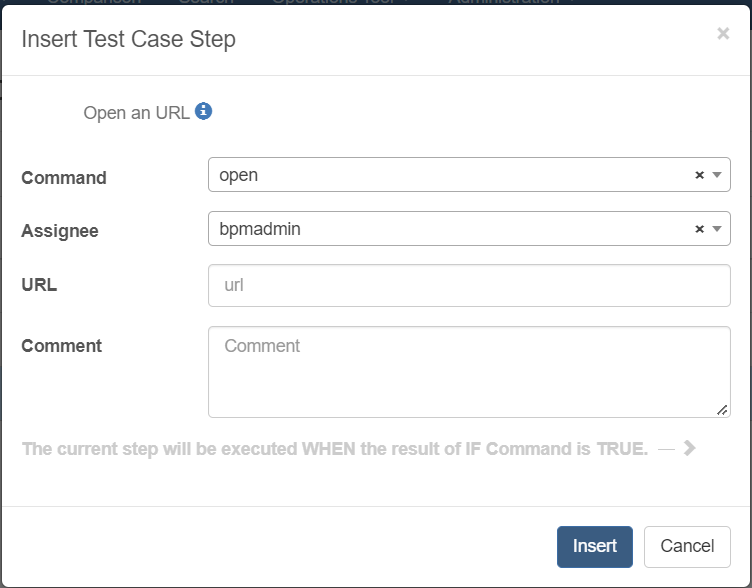
-
Click the Add button.
Edit a Case Step
-
Select the case step you want to edit.
-
In the popup menu, click the edit link.

-
Update the case step.
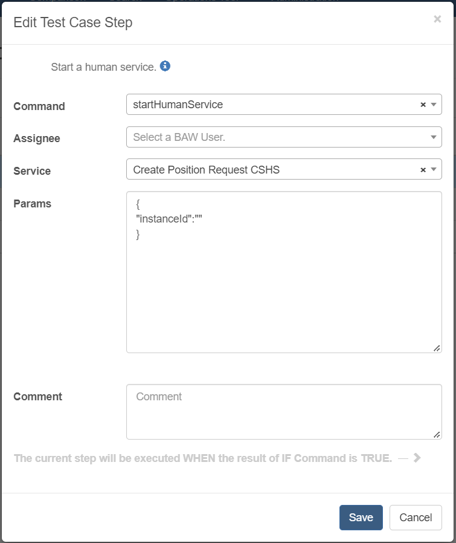
-
Click the Edit button.
-
Click the Exit Edit button on the right of the suite name.
Add Post Script
In some user interface test cases, you may need to request data from the server. If the response time is too long, it will cause a timeout exception and make the test case fail. In this case, you need to add case steps to wait for the loading indicator to be hidden. We provide a post script for you to do this in bulk. More Details
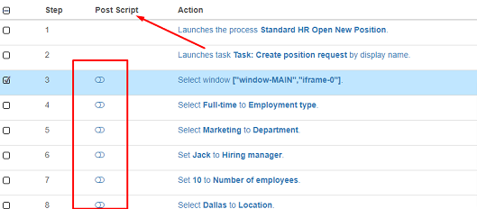
Adjust the Order of Case Steps
-
Select the case step you want to move.
-
In the popup menu, click the MoveUp or MoveDown link to adjust the order of a case step.
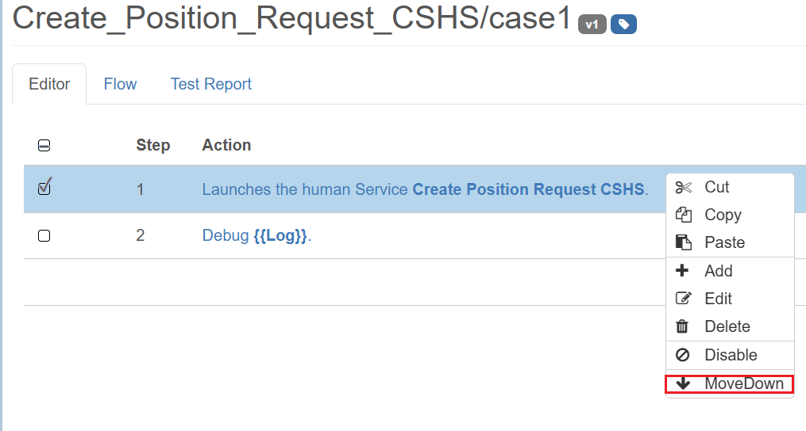
-
Click the Exit Edit button on the right of the suite name.
Copy Case Steps
-
Click the Edit button on the right of the suite name.
-
Select the case steps to be copied, and in the popup menu, click the Copy link.
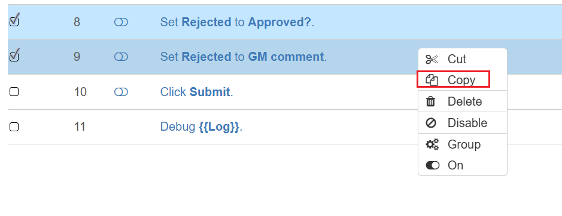
Copy/Cut Case Steps with Group Commands
- Click the Edit button on the top right of the case editor table.
- Select the case steps with group commands, then click the Copy link in the popup menu.
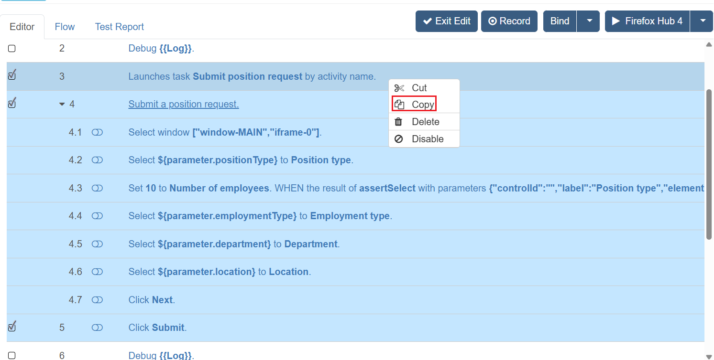
Notes
You could only paste the copied case steps with group commands into test cases. If you paste the case steps into group commands, you will get a warning:
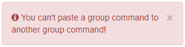
Cut Case Steps
-
Click the Edit button on the right of the suite name.
-
Select the case steps to be cut, and in the popup menu, click the Cut link.
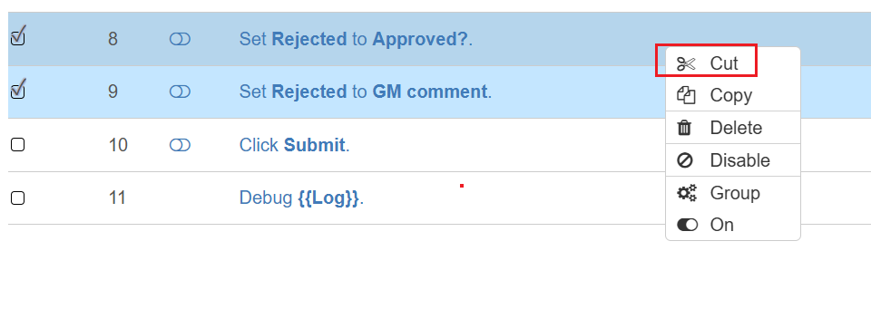
Paste Case Steps
-
Click the Edit button on the right of the suite name.
-
Choose the test case step position where you want to paste, then click the Paste link. The copied/cut case steps will be inserted before the editing case step.
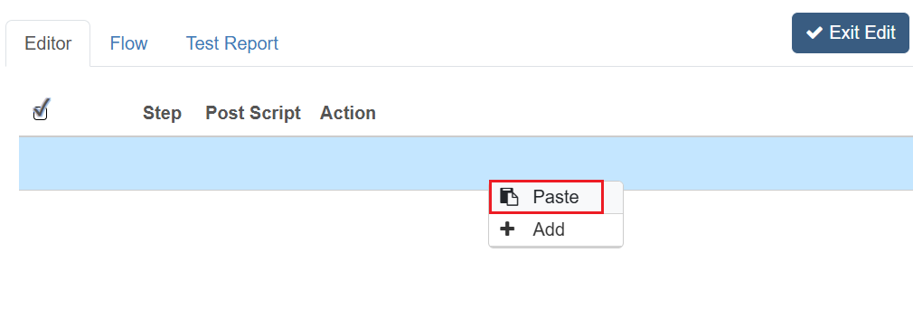
.
Delete a Case Step
Select the test case steps in the test case step table. In the popup menu, click the Delete link.
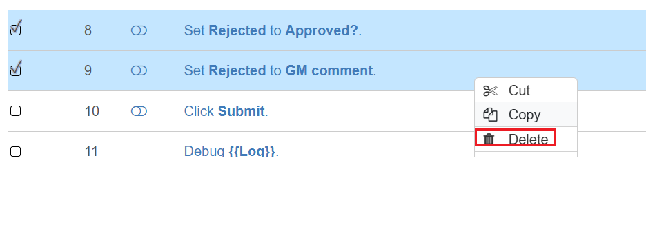
Delete a Test Case
Click the button in the test case list from the left-side menu.
Compare Different Historical Versions of Test Case
-
Click the version number button next to the case name.
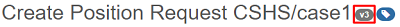
-
Select any two versions.
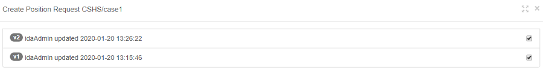
-
Then the Compare button will be shown. Click it. You will enter the comparison page.
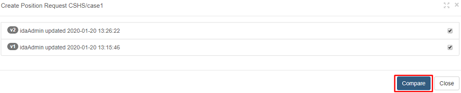
-
Click the full-screen button at the upper right corner of the comparison page, you will maximize the comparison page. At the bottom left corner, updated, deleted, and new steps are shown as legends with different backgrounds, and we also highlight the line of code changed on the bottom left. Just hover the mouse over the yellow highlighted case step, and the tooltip will tell you the changes.
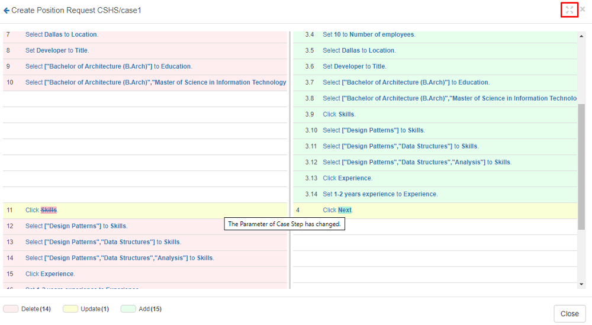
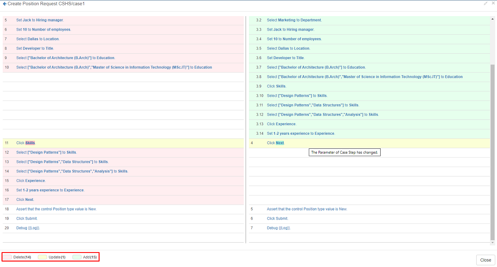
Restore a Specific Version of Test Case
-
Click the version number to see the details of a version.
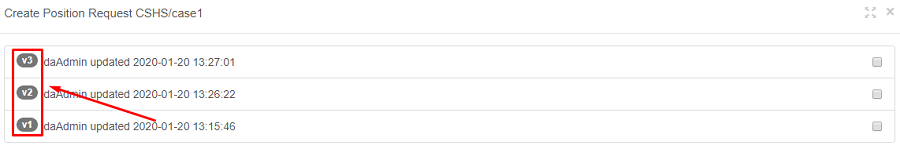
-
Click the Restore button to restore the version.
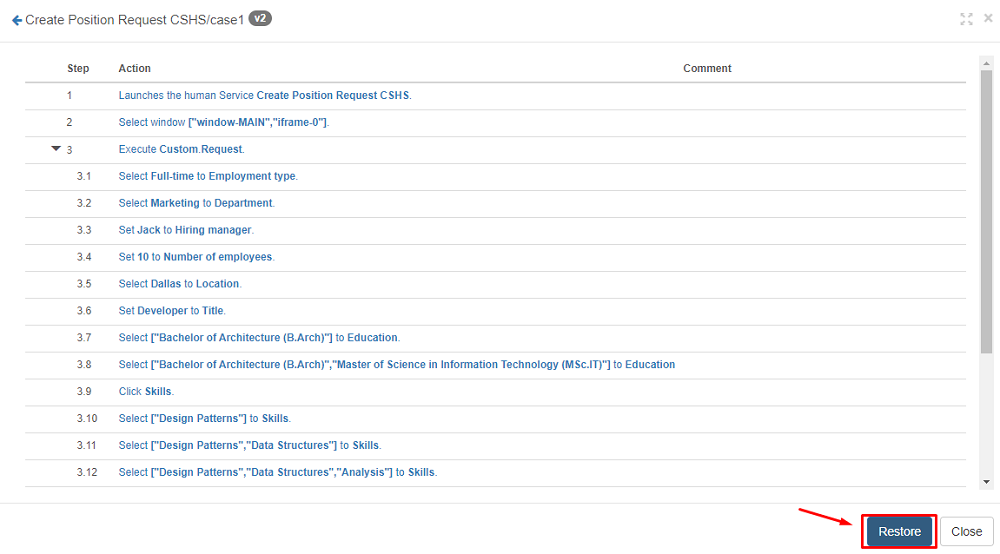
Note:
If a custom command is created inside the current project, is used by other test cases, and will be changed by the version to be restored, a warning message like the one below will be shown. Click OK, and the custom command will be restored. And other test cases that use this custom command will also be changed.
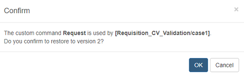
If a custom command is shared by another project and will be changed by the version to be restored, a warning message like the one below will be shown. Click OK, and the custom command will not be restored, but other commands will be restored normally.
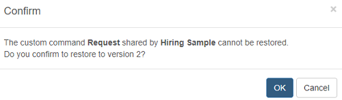
Create a Group Test Case
A group test case means you could run more than one test case sequentially at a time with a group test case. Let us start with creating a group test case.
-
In the left-side menu bar, click the + button on the right of the project name.
-
Click the Artifact Type field, select Build from Scratch, and input the Suite Name field.
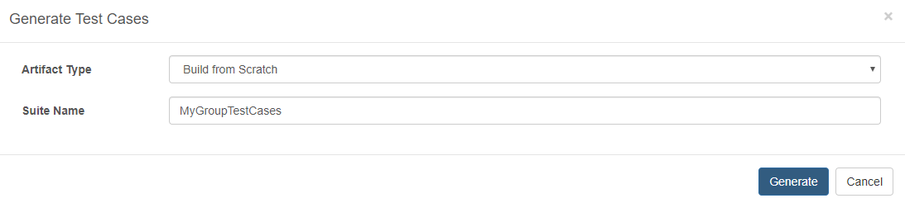
-
In the left-side menu bar, click the … button on the right of the MyGroupTestCases test suite, then select Create Group Test Case.
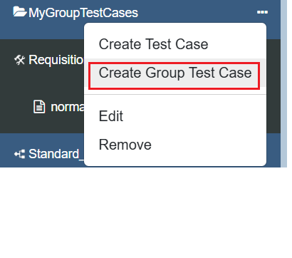
-
Input the Group Test Case Name and Group Test Case Description fields, then click the save button.
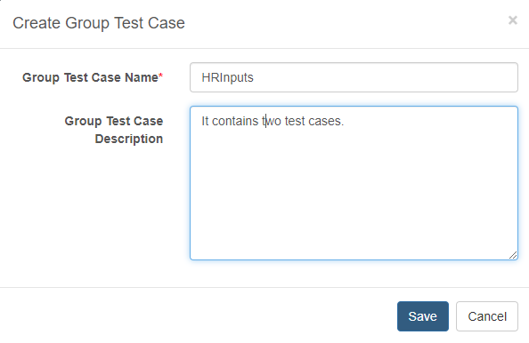
-
Click the edit button on the top-right of the test case editor table to enable editing.
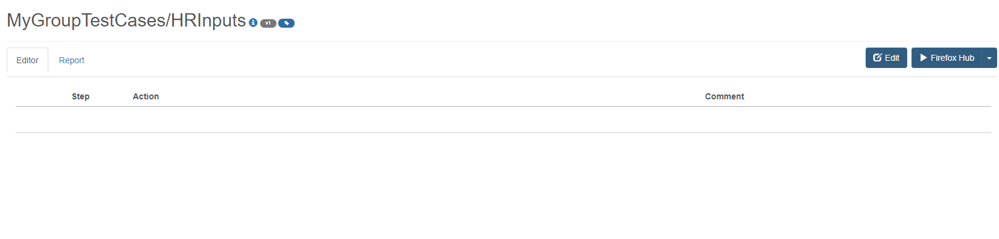
-
Right-click on the test case editor table and click the Add button. Select the target test cases to add to the group test case from the opened modal.
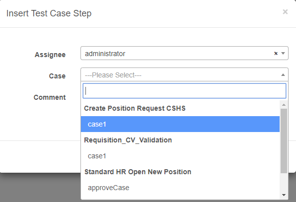